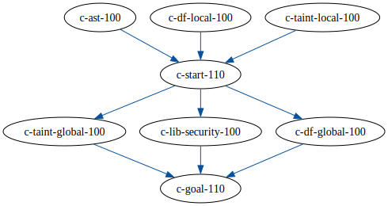
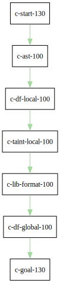

Table of Contents
- 1. Existing workshops in single large repository
- 2. Existing workshops in separate repositories
- 2.1. TODO SCURVY: Untangle this
- 2.2. Common
- 2.3. https://github.com/hohn/codeql-dataflow-sql-injection
- 2.4. https://github.com/advanced-security/codeql-workshops-staging/blob/master/cpp/introduction/session-3/codeql-workshop-cpp-global-data-flow.md
- 2.5. https://github.com/advanced-security/codeql-workshops-staging/tree/master/cpp/introduction/session-2
- 2.6. https://github.com/hohn/codeql-dataflow-i-cpp
- 2.7. https://github.com/advanced-security/codeql-workshops-staging/blob/master/java/codeql-java-workshop-sqlinjection.md
- 2.8. Together
- 2.9. codeql-workshop-runtime-values-c
- 2.10. https://github.com/kraiouchkine/codeql-workshop-runtime-values-c
- 2.11. fork: https://github.com/hohn/codeql-workshop-runtime-values-c
- 2.12. https://github.com/kraiouchkine/codeql-workshop-dangling-pointers-c
- 2.13. fork: https://github.com/hohn/codeql-workshop-dangling-pointers-c
- 2.14. https://github.com/kraiouchkine/codeql-workshop-dataflow-c
- 2.15. https://github.com/rvermeulen/codeql-workshop-vulnerable-linux-driver
- 2.16. https://github.com/rvermeulen/codeql-workshop-dataflow-2-cpp/tree/main/queries
- 2.17. https://github.com/knewbury01/codeql-workshop-integer-conversion.git
- 2.18. fork: https://github.com/hohn/codeql-workshop-integer-conversion.git
- 2.19. GHAS config
- 2.20. codeql-workshop-nekohtml java
- 2.21. CLI / VS Code IDE
- 2.22. Vulnerable Linux Driver advanced special_topic
- 2.23. Sample Project Layout cli project
- 2.24. https://github.com/rvermeulen/codeql-workshop-points-to-java java
- 2.25. CodeQL workshop for Java: Finding a SQL injection java sql cve advanced
- 2.26. https://github.com/hohn/codeql-java-workshop-sqlinjection-owasp java sql
- 2.27. CodeQL cve 2022 35737 C cve custom
- 2.28. https://github.com/rvermeulen/apache-struts-cve-2017-9805 java cve custom
- 2.29. Pack vs. Bundles admin integration
- 2.30. https://github.com/hohn/codeql-cli-end-to-end CLI bundle admin integration
- 2.31. https://github.com/rvermeulen/codeql-bundle bundle
- 2.32. https://github.com/rvermeulen/codeql-workshop-dataflow-2-cpp
- 2.33. https://github.com/hohn/codeql-dataflow-ii-java
- 2.34. codeql workshop elements of syntactical program analysis cpp
- 2.35. https://github.com/rvermeulen/codeql-workshop-introduction-to-javascript javascript
- 2.36. codeql workshop control flow java
- 2.37. https://github.com/rvermeulen/codeql-workshop-dataflow-2-java
- 2.38. codeql workshop control flow cpp cpp control_flow 1
- 2.39. SQL injection example cpp simple
- 2.40. together
1. Existing workshops in single large repository
The repository https://github.com/advanced-security/codeql-workshops-staging has a collection of workshops. Some of them have been separated out below for better usability.
2. Existing workshops in separate repositories
2.1. TODO SCURVY: Untangle this
[ ]This is mixing actual workshops that are based on learning objectives with[ ]an imaginary structure of school-style classes.
First identify the learning paths, then their (common?) components.
2.2. Common
import networkx as nx import scurvy as sc G = nx.MultiDiGraph() Gt = nx.DiGraph() # Set defaults Gt.graph['graph']={'rankdir':'TD', 'fontsize':9} Gt.graph['node']={'shape':'rect', 'fontsize':12} Gt.graph['edges']={'arrowsize':'4.0', 'fontsize':12} G.graph['graph']={'rankdir':'TD', 'fontsize':9} G.graph['node']={'shape':'rect', 'fontsize':12} G.graph['edges']={'arrowsize':'4.0', 'fontsize':12, 'penwidth':6, 'stroke-width':6} # Add whole path, nodes and edges. colnum = 0 def add_path(*path): global colnum for ndi in range(0, len(path)-1): Gt.add_node(path[ndi]) Gt.add_edge(path[ndi], path[ndi+1], color=sc.colors2[colnum]) G.add_node(path[ndi]) G.add_edge(path[ndi], path[ndi+1], color=sc.colors2[colnum]) Gt.add_node(path[ndi+1]) G.add_node(path[ndi+1]) colnum += 1 def draw(graph, filename): svg = nx.nx_agraph.to_agraph(graph).draw(prog='dot', format='svg') with open(filename, 'wb') as f: # f.write(svg.decode()) f.write(svg) return(filename) # add_path( # "test-start-100", # "test-a-100", # "test-b-100", # "test-goal-110", # ) # draw(G, 'g001.svg') 'ok'
'ok'
2.3. https://github.com/hohn/codeql-dataflow-sql-injection
Data Flow Intro, SQL Injection, C
add_path(
"c-start--100",
"c-ast-100",
"c-df-global-100",
"c-goal--110",
)
draw(G, 'g001.svg')

2.4. https://github.com/advanced-security/codeql-workshops-staging/blob/master/cpp/introduction/session-3/codeql-workshop-cpp-global-data-flow.md
Gt = nx.DiGraph() add_path( "c-start--110", "c-ast-100", "c-df-local-100", "c-taint-local-100", "c-taint-global-100", "c-lib-security-100", "c-df-global-100", "c-goal--120", ) draw(Gt, "g010.svg")

LDF-103: Dataflow I
2.5. https://github.com/advanced-security/codeql-workshops-staging/tree/master/cpp/introduction/session-2
Gt = nx.DiGraph() add_path( "c-start--120", "c-ast-100", "c-df-local-100", "c-taint-local-100", "c-goal--130", ) # Set defaults Gt.graph['graph']={'rankdir':'TD', 'fontsize':9} Gt.graph['node']={'shape':'rect', 'fontsize':12} Gt.graph['edges']={'arrowsize':'4.0', 'fontsize':12} draw(Gt, "g020.svg")

2.6. https://github.com/hohn/codeql-dataflow-i-cpp
LDF-103: Dataflow I
Gt = nx.DiGraph() add_path( "c-start--130", "c-ast-100", "c-df-local-100", "c-taint-local-100", "c-lib-format-100", "c-df-global-100", "c-goal--140", ) # Set defaults Gt.graph['graph']={'rankdir':'TD', 'fontsize':9} Gt.graph['node']={'shape':'rect', 'fontsize':12} Gt.graph['edges']={'arrowsize':'4.0', 'fontsize':12} draw(Gt, "g030.svg")

2.7. https://github.com/advanced-security/codeql-workshops-staging/blob/master/java/codeql-java-workshop-sqlinjection.md
Gt = nx.DiGraph() add_path( "java-start--100", "java-ast-100", "java-df-local-100", "java-df-global-100", "java-goal--110", ) # Set defaults Gt.graph['graph']={'rankdir':'TD', 'fontsize':9} Gt.graph['node']={'shape':'rect', 'fontsize':12} Gt.graph['edges']={'arrowsize':'4.0', 'fontsize':12} draw(Gt, "jg010.svg")

2.8. Together
G2 = G.copy() nodes = G2.nodes() for nd in nodes: if "-start-" in nd: nodes[nd]['shape'] = 'invhouse' if "-goal-" in nd: nodes[nd]['shape'] = 'house' draw(G2, "gall.svg")

2.9. codeql-workshop-runtime-values-c
Reasoning about runtime values C/C++ https://github.com/kraiouchkine/codeql-workshop-runtime-values-c
2.10. https://github.com/kraiouchkine/codeql-workshop-runtime-values-c
LDF-204: Reasoning about Runtime Values
- Modules in this workshop:
- Global Value Numbering
- Range Analysis
- HashCons
2.11. fork: https://github.com/hohn/codeql-workshop-runtime-values-c
LDF-204: Reasoning about Runtime Values
- Modules in this workshop:
- Global Value Numbering
- Range Analysis
- HashCons
2.14. https://github.com/kraiouchkine/codeql-workshop-dataflow-c
Workshop Title: LDF-203: Dataflow II
- Modules in this workshop:
- Customizing the Dataflow Graph,
- Barrier Guards,
- Combining Dataflow and Control Flow
2.15. https://github.com/rvermeulen/codeql-workshop-vulnerable-linux-driver
Workshop Title: LDF-203: Dataflow II
- Modules in this workshop:
- Customizing the Dataflow Graph,
- Barrier Guards,
- Combining Dataflow and Control Flow
A user-controlled size argument can lead to a buffer overflow. https://github.com/rvermeulen/codeql-workshop-vulnerable-linux-driver
although that's more experimental
2.19. GHAS config
2.20. codeql-workshop-nekohtml java
2.21. CLI / VS Code IDE
2.22. Vulnerable Linux Driver advanced special_topic
A user-controlled size argument can lead to a buffer overflow. https://github.com/rvermeulen/codeql-workshop-vulnerable-linux-driver
2.23. Sample Project Layout cli project
- https://gist.github.com/hohn/e86d691100e84e6f9a7e96162e0f3c42 (simple and intermediate) and
- https://github.com/rvermeulen/codeql-example-project-layout (comprehensive) are starting points and have been used in various projects
2.24. https://github.com/rvermeulen/codeql-workshop-points-to-java java
To be refined…
Elements of Syntactical Program Analysis for Java
2.25. CodeQL workshop for Java: Finding a SQL injection java sql cve advanced
2.27. CodeQL cve 2022 35737 C cve custom
2.28. https://github.com/rvermeulen/apache-struts-cve-2017-9805 java cve custom
2.29. Pack vs. Bundles admin integration
- bundles include packs and library – just like the public ones.
- https://github.com/advanced-security-demo/codeql-bundle-demo/releases/tag/codeql-bundle-20221211
- https://github.com/advanced-security-demo/codeql-bundle-demo/actions/workflows/bundle.yaml
2.30. https://github.com/hohn/codeql-cli-end-to-end CLI bundle admin integration
2.31. https://github.com/rvermeulen/codeql-bundle bundle
2.34. codeql workshop elements of syntactical program analysis cpp
2.35. https://github.com/rvermeulen/codeql-workshop-introduction-to-javascript javascript
CodeQL: introduction to javascript. Old workshop, originally written by @hohn, now revised.
2.36. codeql workshop control flow java
2.38. codeql workshop control flow cpp cpp control_flow 1
2.39. SQL injection example cpp simple
2.40. together
lp1 = list(nx.all_simple_paths(G, "l-090", "l-190")), lp1 G2 = G.copy() nv2 = G2.nodes(), for p0 in lp1:, for n0 in p0:, nv2[n0]['fillcolor'] = 'lightblue', nv2[n0]['style'] = 'filled', G3 = nx.relabel_nodes(G2, r0), draw(G3)